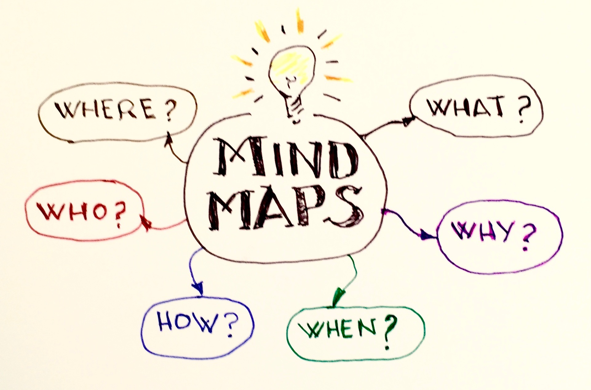
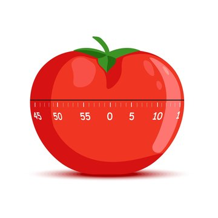

A website created to provide free, unlimited access to study tool, methods, and resources for students from all backgrounds, including those who are socioeconomically disadvantaged, in a fun and engaging way.
The Mozart effect is a theory that listening to Mozart, or any classical music for that matter, improves focus. Music can help students perform better in high pressure situations and help relieve stress. It’s important to remember that this theory may not work for everyone, as some students perform better without music.
Mind mapping is a useful technique that shows how different facts are related and enhances creative problem solving. It is a radical diagram that starts with the mainidea in the center and grows outwards with branching sub sections. Mind mapping helps our brains store important information more easily.

The pomodoro technique is a time management method based on 25 minute stretches of focused work broken by 5 minute breaks. The goal of this technique is to keep yourself motivated and cut down on distractions.

The Feynman technique suggests choosing a concept or topic and teaching it to yourself or someone else. This technique encourages you to break down complex ideas using simple language. Teaching helps you engage deeply with the study material and identify holes in your understanding of the concept.
Studies show that changing scenery between studying is important to improve your mood and concentration. Just a simple walk or moving to a new location can help refresh your mind by stimulating the brain.
Working with others once in a while can be a good refresher. It is a good opportunity to gain new ideas and experiences, and it can be motivating and fun at the same time to work with friends! Gaining new insights from seeing things explained to you from a different perspective can help you prepare better for assignments and tests.